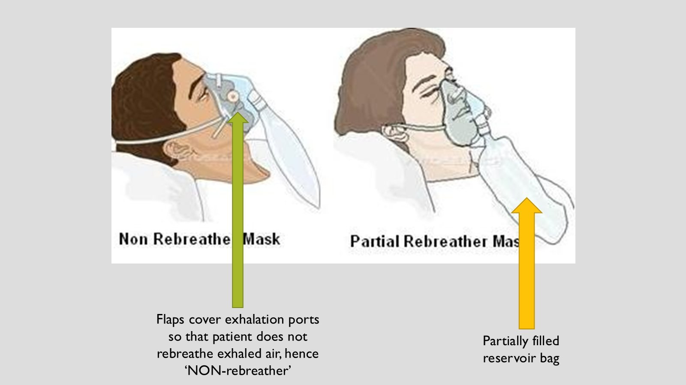
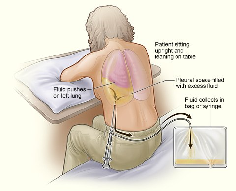
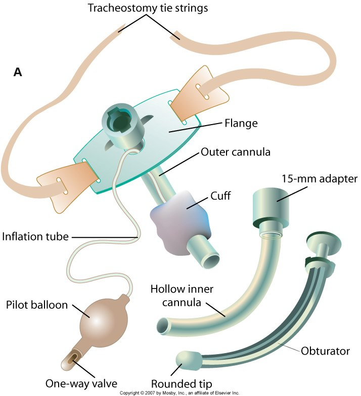
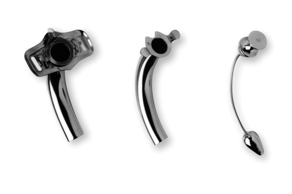

For further study, see Fundamentals II Week 1 – Oxygenation.
Oxygen Therapy Basics
FiO2: room air is 21%, and every liter added raises it.
Titration: an order can give a range and a target, such as 2 to 4 L/min by nasal cannula PRN to keep SpO2 88 to 92%. Go up a liter at a time until the saturation is in the window.
Safety: oxygen is highly flammable. Teach no smoking, no candles, no open flames, and post an oxygen-in-use sign.
Low flow: nasal cannula, simple face mask, partial rebreather, non-rebreather. High flow: Venturi mask.
Device
Flow and FiO2
What to Know
Nasal cannula
2 to 6 L/min, 24 to 44%
Best for: stable patients with low oxygen needs, including long-term use.
Safe and well tolerated.
Skin breakdown on the cheeks, behind the ears and at the nose.
Humidify above 4 L/min.
Simple face mask
6 to 12 L/min, 35 to 50%
Best for: short periods and transport.
Poor choice for claustrophobic patients.
Higher risk of aspiration: no eating with the mask on.
Assess the fit and the skin under it.
Partial rebreather mask
6 to 11 L/min, 60 to 75%
Best for: short periods of dyspnea or other increased oxygen needs.
Patient rebreathes up to one third of exhaled air, which helps humidification.
Keep the reservoir bag partially inflated. Flat and collapsed means no air in the bag.
No flaps over the exhalation ports.
Non-rebreather mask
10 to 15 L/min, 80 to 95%
Best for: a patient in critical need of oxygen, the steps before intubation.
One-way valve lets the patient inhale the maximum O2 concentration.
Two exhalation ports with flaps keep exhaled air from being rebreathed.
Venturi mask
4 to 12 L/min, 24 to 60%
Best for: patients who need highly regulated oxygen concentrations, as in chronic lung disease.
Delivers a precise oxygen concentration with humidity.
Not preferable for long periods.
Partial rebreather and non-rebreather masks: watch for aspiration, and assess at least hourly.

Look for the flaps. Flaps over the exhalation ports mean a non-rebreather. No flaps means a partial rebreather.
Other Oxygen Devices
Face tent (aerosol mask): fits loosely around the face and neck. 24 to 100% oxygen with relatively high humidity. Seen a lot post-op.
High-flow nasal cannula: up to 100% oxygen, very precise. For critical patients.
Nasal cannula with ETCO2 monitor: measures the concentration of CO2 the patient exhales.
CPAP and BiPAP
For further study, see Med Surg I Week 1 – Obstructive Sleep Apnea.
Positive airway pressure pushes air into the airway and helps it stay open on inhalation and exhalation.
CPAP
Continuous positive airway pressure: the same setting the whole time.
For spontaneously breathing patients, to improve oxygenation.
Does not augment ventilation. It only maintains upper airway patency.
Mainstay for obstructive sleep apnea. Simplest to use, works well, cheapest.
Noninvasive BiPAP
Two pressures: one during inhalation and a lower one during exhalation, so air is easier to push out.
Works well in COPD, where the problem is exhaling.
Also used for nocturnal ventilation in neuromuscular disease, chest wall deformity, obstructive sleep apnea and COPD.
To prevent intubation: usually one of the last steps before intubating and sending the patient to the ICU.
Respiratory Assessment
For further study, see Fundamentals II Week 1 – Oxygenation.
Areas to Assess
Now: cough, shortness of breath, dyspnea, breath sounds, pain.
History: pulmonary, smoking, medication use, environmental and occupational exposures.
Normal rate: 12 to 20 breaths per minute.
A prolonged increased rate is a cue that something is wrong. A rate above 27 is linked with an increased risk of cardiac arrest.
Sounds like:loud, low-pitched rumbling that sounds junky, due to fluid or mucus in the airways.
Caused by: conditions that leave secretions in the larger airways, such as bronchitis, pneumonia, COPD.
Can resolve with coughing.
Stridor
Sounds like:harsh, high-pitched crowing on inspiration, due to a narrowed or obstructed upper airway.
Caused by: choking. Also heard in children.
Pleural friction rub
Sounds like:dry grating or creaking, due to the two layers of the pleura rubbing together.
Caused by: an inflamed pleural space.
Oxygen Saturation
SpO2 and SaO2
Oxygen saturation measures diffusion and perfusion.
SpO2: peripheral, read by a probe using light transmission.
SaO2: the arterial measurement.
Normal: 95 to 100%. A provider can prescribe a different limit, as for a patient with lung disease.
Interference with light transmission: patient motion, nail polish (remove it), jaundice, intravascular dyes. Change the probe if the reading is in doubt.
Interference with arterial pulsation: cool fingers and hypothermia, peripheral vascular disease, vasoconstrictors, decreased cardiac output, edema, a tight probe.
Always look at the patient. Do the cues match the number?
Abnormal Findings and What to Do
Finding
What to Do
Dyspnea
Treat the underlying condition first: asthma, pneumonia, heart failure.
Sit the patient up. The thoracic cavity expands and the lungs expand better.
Oxygen therapy, which can improve gas exchange.
Medications: bronchodilators, inhaled steroids, mucolytics, and anti-anxiety medication because anxiety makes dyspnea worse.
Blocked airway
A patent airway is the nursing priority in a patient in distress who still has a pulse.
Open it with a head tilt and chin lift. Use a jaw thrust if a neck injury is a concern.
Keep an oral airway at the bedside for a patient at risk of losing patency.
Rhonchi, or secretions in the airway
Encourage coughing every 2 hours: the most effective way to move secretions, and better than suctioning.
Mobilize, hydrate to thin the secretions, and humidify. Medications only supplement these.
Thick secretions: chest physiotherapy, then coughing and deep breathing. It needs an order.
Weak or ineffective cough
Suction when the patient cannot clear secretions by coughing or chest physiotherapy.
Sterile procedure in hospital. Keep it under 10 seconds in total, and consider pre-oxygenating.
Pain with coughing or deep breathing
Manage the pain and help the patient splint, so coughing and deep breathing are possible.
Risk of atelectasis
Incentive spirometer: lung expansion through deep breathing. Prevents or treats atelectasis. Every post-op patient should have one.
Deep breathing moves air to the lower lobes and helps start a cough.
Change position often. Upright is best, and bedridden patients are repositioned frequently.
Respiratory Diagnostics
For further study, see Med Surg I Week 1 – Respiratory Labs and Diagnostics.
Test
What It Is
Nurse's Responsibilities
Chest x-ray (CXR)
Two-dimensional picture of the lung.
Most common views: PA and lateral.
Have the patient remove metal between the neck and the waist, such as a bra or necklaces.
CT scan
Shows structures in cross-section. Usually preferred over MRI for the lung.
With or without contrast, by provider preference.
Contrast is injected IV and makes specific tissues, organs and blood vessels stand out.
Explain it first: a hard table, and a scanner that revolves around the body with a loud clicking noise.
Sedation may be needed to lie still, or for claustrophobia.
With contrast: check creatinine and BUN. Contrast is nephrotoxic, so report an elevated creatinine to the provider.
With contrast: ask about iodine allergy. The contrast is iodine-based and anaphylaxis is possible. Shellfish allergy is listed with it, though research no longer links the two.
Warn of a warm flush all over the body when the contrast goes in. It is expected.
Force fluids afterward to flush the contrast through the kidneys.
Thoracentesis
The provider puts a large-bore needle into the pleural space.
Done to obtain fluid for diagnosis, remove pleural fluid, or instill medication.
Position upright with the elbows on the overbed table, which opens the intercostal spaces.
Instruct the patient to stay still and not talk.
After: chest x-ray per order, in case the pleura was nicked.
After: assess for hypoxia and pneumothorax. Neither is expected.

Upright, leaning on the overbed table. Pulling the elbows forward opens the intercostal spaces for the needle.
Tracheostomy
For further study, see Fundamentals II Week 1 – Tracheostomy and Med Surg I Week 1 – Tracheostomy.
Shiley
Plastic. Seen most in the hospital. A fresh post-op trach is a Shiley, even one that will be long-term.
Inner cannula: disposable. At trach care it is thrown away and replaced.
Cuff: has one.
Jackson
Metal. Long-term: a patient who keeps a trach long enough is switched from a Shiley to a Jackson.
Inner cannula: reusable. At trach care it is cleaned with solution and a small scrub brush.
Cuff: none.

Parts of a cuffed trach. The hollow inner cannula slides into the outer cannula. The pilot balloon shows whether the cuff is inflated.

Jackson trach. All metal, with no cuff. The reusable inner cannula sits beside the outer cannula.
Cuff Inflated
When: the patient is mechanically ventilated, or the provider ordered it, such as with meals.
Why: a snug fit in the trachea prevents aspiration and helps the ventilator give stronger breaths, with no air leaking around it.
Cuff Deflated
When: typically on the floor (med-surg), so usually deflated at the initial head-to-toe assessment there.
To deflate:
Suction the mouth first. Secretions resting on the cuff would be aspirated once it deflates.
Deflate the cuff.
Suction the trachea afterward.
Respiratory therapy usually inflates and deflates the cuff: how much air it takes depends on the trach.
Responsibility
What to Know
Assessment
Type and size. A Shiley is usually a 6 or an 8. The 6 is smaller.
Cuff: inflated or deflated? The pilot balloon shows which.
Discomfort or pain. A new trach can still be tender.
Oxygenating appropriately? The whole respiratory assessment applies, breath sounds included.
Ties intact, and the obturator and spare trachs in the room: see below.
Trach care
Usually every 12 hours. The inner cannula is replaced or cleaned, by type: see above.
Suctioning
Indication: secretions the patient cannot clear. They can plug the trach.
As often as indicated, which may be more often than trach care. Assess for the indications.
Sterile: the trach is direct access to the lungs, a risk for infection.
Technique: see Weak or ineffective cough, above.
Communication
Passy-Muir speaking valve: helps the patient speak. The cuff is deflated while it is in use.
Not in any respiratory distress. Some patients do not tolerate it: it can bring anxiety or a feeling of respiratory distress.
Needs the provider's OK. Speech and respiratory therapy usually help with the first use.
If the Trach Comes Out
Accidental decannulation: most often while the patient coughs, or at transition times. A cough during a tie change can push the whole trach out.
Keep at the bedside: the obturator, taped to the bed or wall at all times, whatever the type. Two spare trachs: the patient's size, and one smaller in case of edema or swelling.
Take out the inner cannula and put the obturator into the outer cannula.
Extend the neck and open the tissue. Insert the outer cannula with the obturator in it, holding both at the flange so the obturator cannot back out.
Remove the obturator immediately. Left in, it obstructs the airway. Put the inner cannula back.